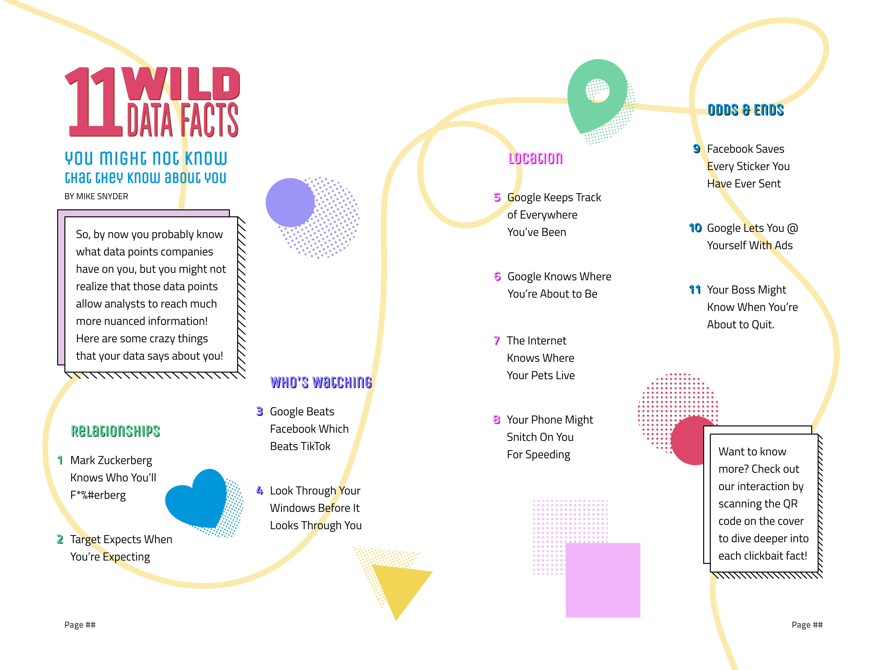

Meet the Team
OverView was developed in collaboration by 6 of us RIT New Media Design students. We created the style and some assets together, and then it was a matter of contributing our individual pieces to create the whole magazine, "zine" and app! My contribution to the zine was the cover, some auxiliary pages, and a list-form article about weird data facts that companies might have collected on you.

90's Nostalgia meets 2020's Glitch
We went with a neo-vintage style to please our Gen Z target audience. We looked back at our own 90s nostalgia and fused them with a glitchy digital style.
The Zine
Our mini-magazine turned out amazing! Here are the pages that I contributed to this project!
The Cover
For the cover illustration I was inspired by eyes watching a user, oversized fashion, and peeling back the curtain. I also titled the magazine based on all these themes. We give the readers an 'overview' of all the info the internet can view about them. I also handled the auxiliary pages since the cover didn't require much research.
The Listicle
I wanted to bring some lightness and a little comedy to the magazine to help break up all the doom and gloom. My listicle features grabby, clickbait facts to pique the readers' interest and get them excited to look into the companion app to learn more.

The App
We agreed that the app would consist of microinteractions based on the spreads we each made in the zine. I created the landing page to correspond to the cover. I even included a fun easter egg to swap the palette of the home from light to dark mode by clicking the eye in the logo.
Fact Deck
For the listicle, I created a deck of cards with one card for each fact. The user can swipe through to find the fact that interests them before tapping the card to flip it over and learn more. It was a challenge to prototype and animate this feature solely in figma, but it was so rewarding to work it out!
A Deeper Dive
Wanna take a deeper look at the whole process? Here's the pdf of my process deck!
Check it Out!
Thanks for Lookin!
back to home
This project was so fun to work on! Also, if you'd like a free illustration asset from OverView, I made the table of contents illustration available through Figma.
To Figma